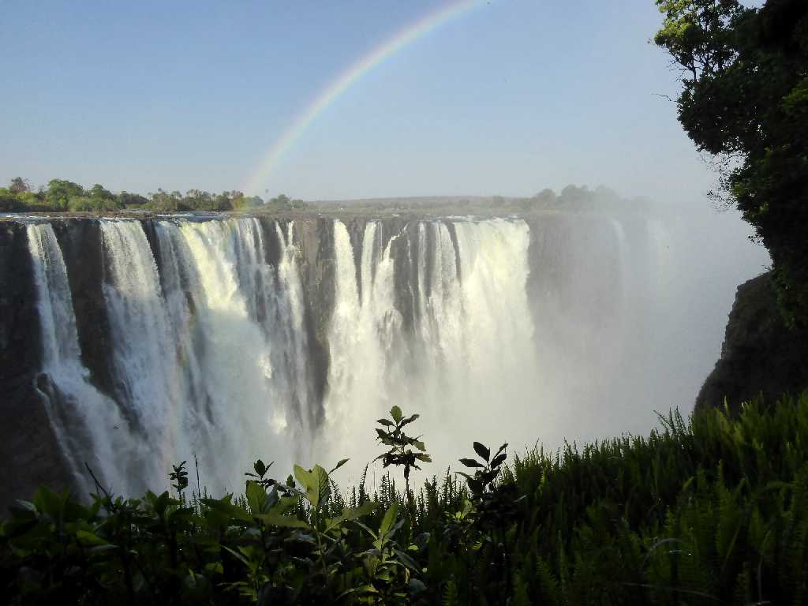
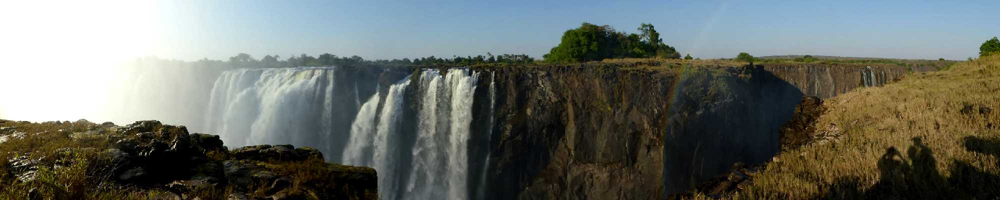
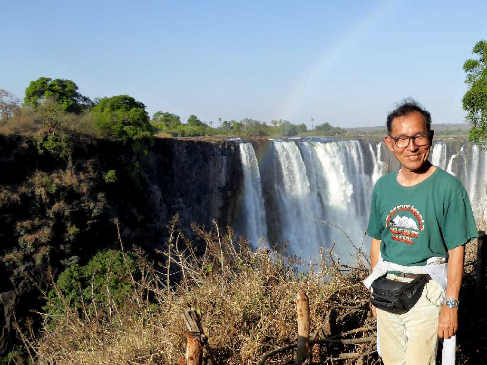

Victoria Falls Zimbabwe
雷鳴の轟く水煙と云われている世界三大瀑布の一つで落差１０８ｍ滝幅１,７０８ｍある

Zimbabwe Victoria Falls Zambia
渇水期(300t/s)でザンビア側は涸れていたが増水期(3,000t/s)の水量はナイアガラ滝(2,400t/s)を超えイグアス滝(1,700t/s)の２倍近くになる

October 9 2018 Victoria Falls